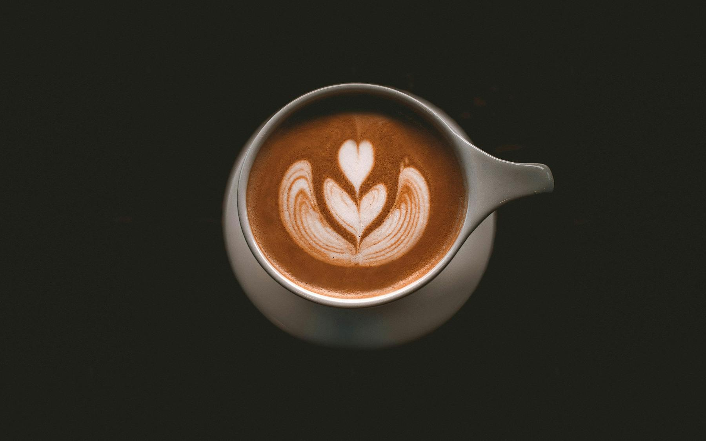

Awesome Coffee Shop
Find your comfort, with a mug of coffe.
Located, at bakker street 09, London

Our Coffee
Step into our cozy coffee shop and experience the rich aroma and bold flavor of our meticulously crafted brews. Each cup is a symphony of carefully selected beans, expertly roasted to perfection, delivering a delightful fusion of smoothness and intensity that will awaken your senses and leave you craving more.
Founded in 1950 by Name, Awesome Coffee Place quickly became a beloved spot in Athens where locals and travelers alike gathered for rich Greek coffee and lively conversation. Despite changing times, the café has remained a steadfast beacon of community and tradition. Today, amidst the modern hustle and bustle of Athens, patrons still flock to its cozy tables, savoring each sip of carefully brewed coffee and carrying on its legacy of warmth and camaraderie.